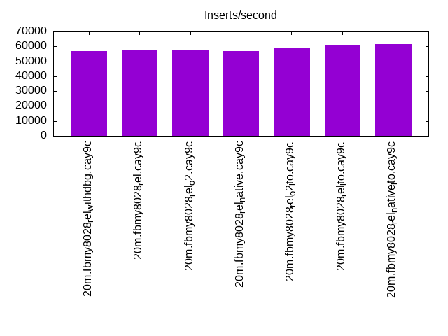
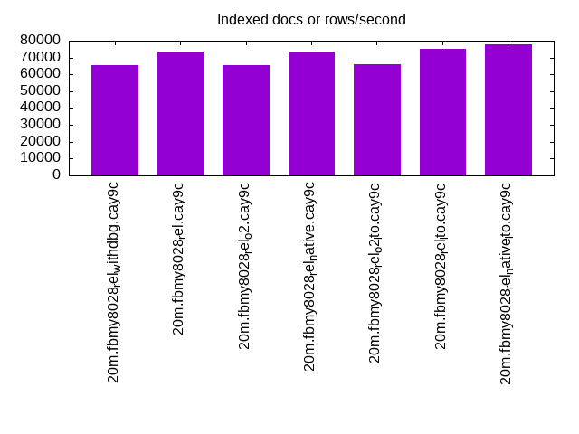
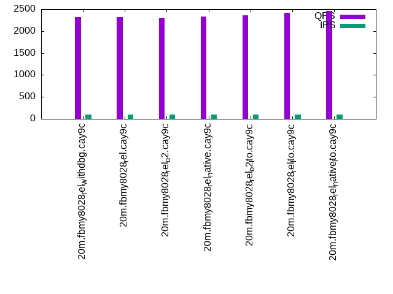
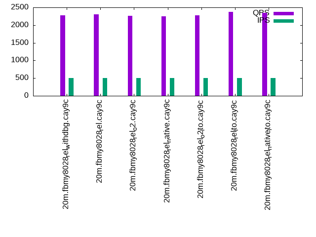
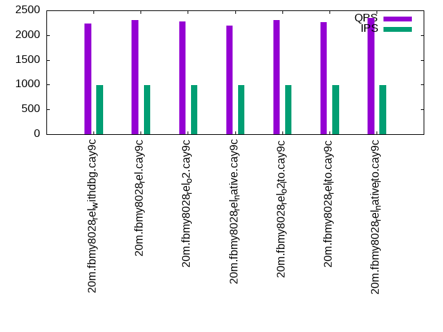

This is a report for the insert benchmark with 20M docs and 1 client(s). It is generated by scripts (bash, awk, sed) and Tufte might not be impressed. An overview of the insert benchmark is here and a short update is here. Below, by DBMS, I mean DBMS+version.config. An example is my8020.c10b40 where my means MySQL, 8020 is version 8.0.20 and c10b40 is the name for the configuration file.
The test server has 8 AMD cores, 16G RAM and an NVMe SSD. It is described here as the Beelink. The benchmark was run with 1 client and there were 1 or 2 connections per client (1 for queries, 1 for inserts). The benchmark loads 20M rows without secondary indexes, creates secondary indexes, loads another 20M rows then does 3 read+write tests for one hour each that do queries as fast as possible with 100, 500 and then 1000 writes/second/client concurrent with the queries. The database is cached by the storage engine and the only IO is for writes. Clients and the DBMS share one server. The per-database configs are in the per-database subdirectories here.
The tested DBMS are:
The numbers are inserts/s for l.i0 and l.i1, indexed docs (or rows) /s for l.x and queries/s for q*.2. The values are the average rate over the entire test for inserts (IPS) and queries (QPS). The range of values for IPS and QPS is split into 3 parts: bottom 25%, middle 50%, top 25%. Values in the bottom 25% have a red background, values in the top 25% have a green background and values in the middle have no color. A gray background is used for values that can be ignored because the DBMS did not sustain the target insert rate. Red backgrounds are not used when the minimum value is within 80% of the max value.
| dbms | l.i0 | l.x | l.i1 | q100.1 | q500.1 | q1000.1 |
|---|---|---|---|---|---|---|
| 20m.fbmy8028_rel_withdbg.cay9c | 56980 | 65472 | 24067 | 2320 | 2280 | 2237 |
| 20m.fbmy8028_rel.cay9c | 57803 | 73626 | 24184 | 2321 | 2298 | 2300 |
| 20m.fbmy8028_rel_o2.cay9c | 57637 | 65472 | 24242 | 2310 | 2266 | 2282 |
| 20m.fbmy8028_rel_native.cay9c | 56818 | 73626 | 23952 | 2332 | 2251 | 2194 |
| 20m.fbmy8028_rel_o2_lto.cay9c | 58651 | 66118 | 24510 | 2356 | 2274 | 2304 |
| 20m.fbmy8028_rel_lto.cay9c | 60790 | 75281 | 25510 | 2414 | 2374 | 2269 |
| 20m.fbmy8028_rel_native_lto.cay9c | 61538 | 77907 | 25740 | 2459 | 2352 | 2348 |
This lists the average rate of inserts/s for the tests that do inserts concurrent with queries. For such tests the query rate is listed in the table above. The read+write tests are setup so that the insert rate should match the target rate every second. Cells that are not at least 95% of the target have a red background to indicate a failure to satisfy the target.
| dbms | q100.1 | q500.1 | q1000.1 |
|---|---|---|---|
| fbmy8028_rel_withdbg.cay9c | 100 | 499 | 998 |
| fbmy8028_rel.cay9c | 100 | 499 | 998 |
| fbmy8028_rel_o2.cay9c | 100 | 499 | 998 |
| fbmy8028_rel_native.cay9c | 100 | 499 | 998 |
| fbmy8028_rel_o2_lto.cay9c | 100 | 499 | 998 |
| fbmy8028_rel_lto.cay9c | 100 | 499 | 998 |
| fbmy8028_rel_native_lto.cay9c | 100 | 499 | 998 |
| target | 100 | 500 | 1000 |
l.i0: load without secondary indexes. Graphs for performance per 1-second interval are here.
Average throughput:
Insert response time histogram: each cell has the percentage of responses that take <= the time in the header and max is the max response time in seconds. For the max column values in the top 25% of the range have a red background and in the bottom 25% of the range have a green background. The red background is not used when the min value is within 80% of the max value.
| dbms | 256us | 1ms | 4ms | 16ms | 64ms | 256ms | 1s | 4s | 16s | gt | max |
|---|---|---|---|---|---|---|---|---|---|---|---|
| fbmy8028_rel_withdbg.cay9c | 99.722 | 0.200 | 0.074 | 0.003 | 0.099 | ||||||
| fbmy8028_rel.cay9c | 99.725 | 0.197 | 0.075 | 0.003 | 0.081 | ||||||
| fbmy8028_rel_o2.cay9c | 99.723 | 0.203 | 0.071 | 0.003 | 0.080 | ||||||
| fbmy8028_rel_native.cay9c | 99.720 | 0.204 | 0.073 | 0.003 | 0.079 | ||||||
| fbmy8028_rel_o2_lto.cay9c | 99.725 | 0.200 | 0.071 | 0.003 | 0.093 | ||||||
| fbmy8028_rel_lto.cay9c | 99.731 | 0.195 | 0.072 | 0.002 | 0.080 | ||||||
| fbmy8028_rel_native_lto.cay9c | 99.734 | 0.194 | 0.069 | 0.003 | 0.078 |
Performance metrics for the DBMS listed above. Some are normalized by throughput, others are not. Legend for results is here.
ips qps rps rmbps wps wmbps rpq rkbpq wpi wkbpi csps cpups cspq cpupq dbgb1 dbgb2 rss maxop p50 p99 tag 56980 0 0 0.0 34.7 11.1 0.000 0.000 0.001 0.200 5940 22.5 0.104 32 0.7 1.9 0.6 0.099 57135 51441 20m.fbmy8028_rel_withdbg.cay9c 57803 0 0 0.0 35.0 11.3 0.000 0.000 0.001 0.200 6015 22.6 0.104 31 0.7 1.9 0.6 0.081 58034 52043 20m.fbmy8028_rel.cay9c 57637 0 0 0.0 34.9 11.2 0.000 0.000 0.001 0.199 5974 22.6 0.104 31 0.7 1.9 0.6 0.080 58033 50942 20m.fbmy8028_rel_o2.cay9c 56818 0 0 0.0 34.4 11.1 0.000 0.000 0.001 0.200 5910 22.3 0.104 31 0.7 1.9 0.6 0.079 57037 51693 20m.fbmy8028_rel_native.cay9c 58651 0 0 0.0 35.7 11.5 0.000 0.000 0.001 0.200 6080 22.9 0.104 31 0.7 1.9 0.6 0.093 58935 51442 20m.fbmy8028_rel_o2_lto.cay9c 60790 0 0 0.0 36.8 11.8 0.000 0.000 0.001 0.199 6292 22.4 0.104 29 0.7 1.9 0.6 0.080 61132 55634 20m.fbmy8028_rel_lto.cay9c 61538 0 0 0.0 36.9 12.0 0.000 0.000 0.001 0.199 6369 22.7 0.104 30 0.7 1.9 0.6 0.078 62029 55439 20m.fbmy8028_rel_native_lto.cay9c
l.x: create secondary indexes.
Average throughput:
Performance metrics for the DBMS listed above. Some are normalized by throughput, others are not. Legend for results is here.
ips qps rps rmbps wps wmbps rpq rkbpq wpi wkbpi csps cpups cspq cpupq dbgb1 dbgb2 rss maxop p50 p99 tag 65472 0 0 0.0 25.4 10.0 0.000 0.000 0.000 0.156 389 12.8 0.006 16 1.4 2.7 1.9 0.009 NA NA 20m.fbmy8028_rel_withdbg.cay9c 73626 0 0 0.0 28.3 11.1 0.000 0.000 0.000 0.155 377 12.7 0.005 14 1.4 2.7 1.9 0.012 NA NA 20m.fbmy8028_rel.cay9c 65472 0 0 0.0 25.5 10.0 0.000 0.000 0.000 0.156 389 12.8 0.006 16 1.4 2.7 1.9 0.009 NA NA 20m.fbmy8028_rel_o2.cay9c 73626 0 0 0.0 28.4 11.2 0.000 0.000 0.000 0.155 376 12.8 0.005 14 1.4 2.7 1.9 0.014 NA NA 20m.fbmy8028_rel_native.cay9c 66118 0 0 0.0 25.5 10.0 0.000 0.000 0.000 0.155 359 12.8 0.005 15 1.4 2.7 1.9 0.008 NA NA 20m.fbmy8028_rel_o2_lto.cay9c 75281 0 0 0.0 29.1 11.4 0.000 0.000 0.000 0.156 386 12.8 0.005 14 1.4 2.7 1.9 0.027 NA NA 20m.fbmy8028_rel_lto.cay9c 77907 0 0 0.0 30.0 11.9 0.000 0.000 0.000 0.156 410 12.7 0.005 13 1.4 2.7 1.9 0.009 NA NA 20m.fbmy8028_rel_native_lto.cay9c
l.i1: continue load after secondary indexes created. Graphs for performance per 1-second interval are here.
Average throughput:
Insert response time histogram: each cell has the percentage of responses that take <= the time in the header and max is the max response time in seconds. For the max column values in the top 25% of the range have a red background and in the bottom 25% of the range have a green background. The red background is not used when the min value is within 80% of the max value.
| dbms | 256us | 1ms | 4ms | 16ms | 64ms | 256ms | 1s | 4s | 16s | gt | max |
|---|---|---|---|---|---|---|---|---|---|---|---|
| fbmy8028_rel_withdbg.cay9c | 99.737 | 0.225 | 0.038 | 0.063 | |||||||
| fbmy8028_rel.cay9c | 99.737 | 0.224 | 0.038 | nonzero | 0.076 | ||||||
| fbmy8028_rel_o2.cay9c | 99.740 | 0.221 | 0.039 | 0.001 | 0.075 | ||||||
| fbmy8028_rel_native.cay9c | 99.731 | 0.229 | 0.039 | 0.001 | 0.074 | ||||||
| fbmy8028_rel_o2_lto.cay9c | 99.740 | 0.221 | 0.039 | nonzero | 0.074 | ||||||
| fbmy8028_rel_lto.cay9c | 99.749 | 0.211 | 0.039 | 0.001 | 0.074 | ||||||
| fbmy8028_rel_native_lto.cay9c | 99.751 | 0.211 | 0.037 | 0.001 | 0.074 |
Performance metrics for the DBMS listed above. Some are normalized by throughput, others are not. Legend for results is here.
ips qps rps rmbps wps wmbps rpq rkbpq wpi wkbpi csps cpups cspq cpupq dbgb1 dbgb2 rss maxop p50 p99 tag 24067 0 7 0.9 63.3 24.8 0.000 0.038 0.003 1.055 5352 27.2 0.222 90 2.8 4.7 2.6 0.063 23873 21525 20m.fbmy8028_rel_withdbg.cay9c 24184 0 7 0.9 62.8 24.7 0.000 0.038 0.003 1.046 5356 26.9 0.221 89 3.1 5.0 2.6 0.076 23974 21536 20m.fbmy8028_rel.cay9c 24242 0 7 0.9 62.2 24.6 0.000 0.038 0.003 1.041 5380 26.9 0.222 89 2.8 4.8 2.5 0.075 24073 21391 20m.fbmy8028_rel_o2.cay9c 23952 0 7 0.9 63.0 24.6 0.000 0.038 0.003 1.053 5307 26.8 0.222 90 3.1 5.0 2.6 0.074 23673 21226 20m.fbmy8028_rel_native.cay9c 24510 0 7 0.9 63.4 25.0 0.000 0.038 0.003 1.044 5424 27.4 0.221 89 3.0 4.9 2.6 0.074 24422 21626 20m.fbmy8028_rel_o2_lto.cay9c 25510 0 8 0.9 66.0 26.2 0.000 0.038 0.003 1.053 5610 27.0 0.220 85 3.1 5.0 2.6 0.074 25322 22674 20m.fbmy8028_rel_lto.cay9c 25740 0 8 1.0 67.9 26.5 0.000 0.038 0.003 1.054 5712 27.2 0.222 85 3.0 4.9 2.6 0.074 25672 22525 20m.fbmy8028_rel_native_lto.cay9c
q100.1: range queries with 100 insert/s per client. Graphs for performance per 1-second interval are here.
Average throughput:
Query response time histogram: each cell has the percentage of responses that take <= the time in the header and max is the max response time in seconds. For max values in the top 25% of the range have a red background and in the bottom 25% of the range have a green background. The red background is not used when the min value is within 80% of the max value.
| dbms | 256us | 1ms | 4ms | 16ms | 64ms | 256ms | 1s | 4s | 16s | gt | max |
|---|---|---|---|---|---|---|---|---|---|---|---|
| fbmy8028_rel_withdbg.cay9c | 0.661 | 99.338 | nonzero | nonzero | 0.007 | ||||||
| fbmy8028_rel.cay9c | 0.924 | 99.076 | nonzero | 0.003 | |||||||
| fbmy8028_rel_o2.cay9c | 0.420 | 99.580 | nonzero | 0.004 | |||||||
| fbmy8028_rel_native.cay9c | 0.626 | 99.374 | nonzero | 0.001 | |||||||
| fbmy8028_rel_o2_lto.cay9c | 1.109 | 98.891 | nonzero | 0.003 | |||||||
| fbmy8028_rel_lto.cay9c | 2.028 | 97.972 | nonzero | 0.003 | |||||||
| fbmy8028_rel_native_lto.cay9c | 1.647 | 98.353 | nonzero | 0.001 |
Insert response time histogram: each cell has the percentage of responses that take <= the time in the header and max is the max response time in seconds. For max values in the top 25% of the range have a red background and in the bottom 25% of the range have a green background. The red background is not used when the min value is within 80% of the max value.
| dbms | 256us | 1ms | 4ms | 16ms | 64ms | 256ms | 1s | 4s | 16s | gt | max |
|---|---|---|---|---|---|---|---|---|---|---|---|
| fbmy8028_rel_withdbg.cay9c | 99.389 | 0.583 | 0.028 | 0.018 | |||||||
| fbmy8028_rel.cay9c | 99.556 | 0.417 | 0.028 | 0.018 | |||||||
| fbmy8028_rel_o2.cay9c | 99.583 | 0.417 | 0.009 | ||||||||
| fbmy8028_rel_native.cay9c | 99.528 | 0.472 | 0.009 | ||||||||
| fbmy8028_rel_o2_lto.cay9c | 99.556 | 0.417 | 0.028 | 0.016 | |||||||
| fbmy8028_rel_lto.cay9c | 99.528 | 0.472 | 0.009 | ||||||||
| fbmy8028_rel_native_lto.cay9c | 99.556 | 0.417 | 0.028 | 0.018 |
Performance metrics for the DBMS listed above. Some are normalized by throughput, others are not. Legend for results is here.
ips qps rps rmbps wps wmbps rpq rkbpq wpi wkbpi csps cpups cspq cpupq dbgb1 dbgb2 rss maxop p50 p99 tag 100 2320 0 0.0 3.4 0.1 0.000 0.000 0.034 0.869 9125 13.4 3.934 462 2.8 4.8 4.4 0.007 2285 2078 20m.fbmy8028_rel_withdbg.cay9c 100 2321 0 0.0 3.5 0.1 0.000 0.000 0.036 1.312 9124 13.4 3.930 462 2.8 4.8 4.4 0.003 2269 2061 20m.fbmy8028_rel.cay9c 100 2310 0 0.0 3.7 0.2 0.000 0.000 0.038 2.002 9082 13.4 3.932 464 2.8 4.7 4.3 0.004 2237 2046 20m.fbmy8028_rel_o2.cay9c 100 2332 0 0.0 4.0 0.3 0.000 0.000 0.041 2.957 9171 13.5 3.933 463 2.8 4.7 4.3 0.001 2317 2157 20m.fbmy8028_rel_native.cay9c 100 2356 0 0.0 3.8 0.2 0.000 0.000 0.038 2.388 9265 13.5 3.932 458 2.8 4.7 4.4 0.003 2303 2157 20m.fbmy8028_rel_o2_lto.cay9c 100 2414 0 0.0 3.6 0.1 0.000 0.000 0.036 1.398 9478 13.4 3.926 444 2.8 4.8 4.3 0.003 2365 2158 20m.fbmy8028_rel_lto.cay9c 100 2459 0 0.0 3.5 0.1 0.000 0.000 0.035 1.078 9656 13.4 3.926 436 2.8 4.8 4.4 0.001 2445 2221 20m.fbmy8028_rel_native_lto.cay9c
q500.1: range queries with 500 insert/s per client. Graphs for performance per 1-second interval are here.
Average throughput:
Query response time histogram: each cell has the percentage of responses that take <= the time in the header and max is the max response time in seconds. For max values in the top 25% of the range have a red background and in the bottom 25% of the range have a green background. The red background is not used when the min value is within 80% of the max value.
| dbms | 256us | 1ms | 4ms | 16ms | 64ms | 256ms | 1s | 4s | 16s | gt | max |
|---|---|---|---|---|---|---|---|---|---|---|---|
| fbmy8028_rel_withdbg.cay9c | 0.199 | 99.801 | 0.001 | 0.002 | |||||||
| fbmy8028_rel.cay9c | 0.407 | 99.592 | 0.001 | 0.004 | |||||||
| fbmy8028_rel_o2.cay9c | 0.232 | 99.768 | 0.001 | 0.003 | |||||||
| fbmy8028_rel_native.cay9c | 0.306 | 99.694 | nonzero | 0.003 | |||||||
| fbmy8028_rel_o2_lto.cay9c | 0.431 | 99.568 | 0.001 | 0.003 | |||||||
| fbmy8028_rel_lto.cay9c | 1.152 | 98.847 | nonzero | 0.002 | |||||||
| fbmy8028_rel_native_lto.cay9c | 1.188 | 98.812 | nonzero | 0.003 |
Insert response time histogram: each cell has the percentage of responses that take <= the time in the header and max is the max response time in seconds. For max values in the top 25% of the range have a red background and in the bottom 25% of the range have a green background. The red background is not used when the min value is within 80% of the max value.
| dbms | 256us | 1ms | 4ms | 16ms | 64ms | 256ms | 1s | 4s | 16s | gt | max |
|---|---|---|---|---|---|---|---|---|---|---|---|
| fbmy8028_rel_withdbg.cay9c | 99.633 | 0.322 | 0.044 | 0.018 | |||||||
| fbmy8028_rel.cay9c | 99.600 | 0.356 | 0.044 | 0.023 | |||||||
| fbmy8028_rel_o2.cay9c | 99.606 | 0.350 | 0.044 | 0.018 | |||||||
| fbmy8028_rel_native.cay9c | 99.617 | 0.339 | 0.044 | 0.018 | |||||||
| fbmy8028_rel_o2_lto.cay9c | 99.672 | 0.289 | 0.039 | 0.023 | |||||||
| fbmy8028_rel_lto.cay9c | 99.633 | 0.322 | 0.044 | 0.019 | |||||||
| fbmy8028_rel_native_lto.cay9c | 99.633 | 0.322 | 0.044 | 0.018 |
Performance metrics for the DBMS listed above. Some are normalized by throughput, others are not. Legend for results is here.
ips qps rps rmbps wps wmbps rpq rkbpq wpi wkbpi csps cpups cspq cpupq dbgb1 dbgb2 rss maxop p50 p99 tag 499 2280 0 0.0 3.7 0.2 0.000 0.000 0.007 0.509 9053 13.7 3.970 481 2.9 5.0 4.6 0.002 2285 2013 20m.fbmy8028_rel_withdbg.cay9c 499 2298 0 0.0 3.7 0.3 0.000 0.000 0.007 0.529 9106 13.6 3.963 474 2.9 5.0 4.5 0.004 2301 2014 20m.fbmy8028_rel.cay9c 499 2266 0 0.0 3.7 0.3 0.000 0.000 0.007 0.571 8981 13.5 3.964 477 2.9 5.0 4.4 0.003 2237 2015 20m.fbmy8028_rel_o2.cay9c 499 2251 0 0.0 3.5 0.2 0.000 0.000 0.007 0.408 8924 13.5 3.964 480 2.9 5.0 4.5 0.003 2222 2014 20m.fbmy8028_rel_native.cay9c 499 2274 0 0.0 3.7 0.3 0.000 0.000 0.007 0.571 9014 13.6 3.964 479 2.9 5.0 4.6 0.003 2269 2046 20m.fbmy8028_rel_o2_lto.cay9c 499 2374 0 0.0 3.6 0.2 0.000 0.000 0.007 0.489 9394 13.5 3.957 455 2.9 5.0 4.5 0.002 2349 2125 20m.fbmy8028_rel_lto.cay9c 499 2352 0 0.0 3.7 0.2 0.000 0.000 0.007 0.509 9310 13.6 3.959 463 2.9 5.0 4.5 0.003 2318 2158 20m.fbmy8028_rel_native_lto.cay9c
q1000.1: range queries with 1000 insert/s per client. Graphs for performance per 1-second interval are here.
Average throughput:
Query response time histogram: each cell has the percentage of responses that take <= the time in the header and max is the max response time in seconds. For max values in the top 25% of the range have a red background and in the bottom 25% of the range have a green background. The red background is not used when the min value is within 80% of the max value.
| dbms | 256us | 1ms | 4ms | 16ms | 64ms | 256ms | 1s | 4s | 16s | gt | max |
|---|---|---|---|---|---|---|---|---|---|---|---|
| fbmy8028_rel_withdbg.cay9c | 0.200 | 99.800 | 0.001 | 0.003 | |||||||
| fbmy8028_rel.cay9c | 0.479 | 99.519 | 0.002 | 0.003 | |||||||
| fbmy8028_rel_o2.cay9c | 0.253 | 99.746 | 0.001 | 0.004 | |||||||
| fbmy8028_rel_native.cay9c | 0.175 | 99.824 | nonzero | 0.001 | |||||||
| fbmy8028_rel_o2_lto.cay9c | 0.723 | 99.276 | 0.001 | nonzero | 0.004 | ||||||
| fbmy8028_rel_lto.cay9c | 0.575 | 99.425 | 0.001 | 0.003 | |||||||
| fbmy8028_rel_native_lto.cay9c | 1.182 | 98.818 | 0.001 | nonzero | 0.005 |
Insert response time histogram: each cell has the percentage of responses that take <= the time in the header and max is the max response time in seconds. For max values in the top 25% of the range have a red background and in the bottom 25% of the range have a green background. The red background is not used when the min value is within 80% of the max value.
| dbms | 256us | 1ms | 4ms | 16ms | 64ms | 256ms | 1s | 4s | 16s | gt | max |
|---|---|---|---|---|---|---|---|---|---|---|---|
| fbmy8028_rel_withdbg.cay9c | 99.628 | 0.336 | 0.036 | 0.023 | |||||||
| fbmy8028_rel.cay9c | 99.644 | 0.314 | 0.042 | 0.023 | |||||||
| fbmy8028_rel_o2.cay9c | 99.614 | 0.344 | 0.042 | 0.018 | |||||||
| fbmy8028_rel_native.cay9c | 99.642 | 0.314 | 0.044 | 0.018 | |||||||
| fbmy8028_rel_o2_lto.cay9c | 99.686 | 0.269 | 0.044 | 0.023 | |||||||
| fbmy8028_rel_lto.cay9c | 99.642 | 0.317 | 0.042 | 0.023 | |||||||
| fbmy8028_rel_native_lto.cay9c | 99.661 | 0.297 | 0.042 | 0.023 |
Performance metrics for the DBMS listed above. Some are normalized by throughput, others are not. Legend for results is here.
ips qps rps rmbps wps wmbps rpq rkbpq wpi wkbpi csps cpups cspq cpupq dbgb1 dbgb2 rss maxop p50 p99 tag 998 2237 0 0.0 6.2 1.2 0.000 0.000 0.006 1.275 8985 14.6 4.017 522 3.1 3.3 5.3 0.003 2237 1998 20m.fbmy8028_rel_withdbg.cay9c 998 2300 0 0.0 6.0 1.2 0.000 0.000 0.006 1.237 9226 14.7 4.010 511 3.1 3.4 5.9 0.003 2317 2014 20m.fbmy8028_rel.cay9c 998 2282 0 0.0 5.2 0.9 0.000 0.000 0.005 0.932 9149 14.5 4.009 508 3.1 3.4 5.1 0.004 2285 2014 20m.fbmy8028_rel_o2.cay9c 998 2194 0 0.0 5.3 0.9 0.000 0.000 0.005 0.930 8816 14.5 4.017 529 3.1 3.4 5.2 0.001 2157 1998 20m.fbmy8028_rel_native.cay9c 998 2304 0 0.0 5.3 0.9 0.000 0.000 0.005 0.893 9242 14.5 4.011 503 3.1 3.4 5.5 0.004 2269 2046 20m.fbmy8028_rel_o2_lto.cay9c 998 2269 0 0.0 6.1 1.3 0.000 0.000 0.006 1.300 9102 14.7 4.012 518 3.0 3.3 5.3 0.003 2253 2062 20m.fbmy8028_rel_lto.cay9c 998 2348 0 0.0 6.1 1.2 0.000 0.000 0.006 1.275 9404 14.5 4.006 494 3.1 3.4 5.3 0.005 2318 2142 20m.fbmy8028_rel_native_lto.cay9c
l.i0: load without secondary indexes
Performance metrics for all DBMS, not just the ones listed above. Some are normalized by throughput, others are not. Legend for results is here.
ips qps rps rmbps wps wmbps rpq rkbpq wpi wkbpi csps cpups cspq cpupq dbgb1 dbgb2 rss maxop p50 p99 tag 56980 0 0 0.0 34.7 11.1 0.000 0.000 0.001 0.200 5940 22.5 0.104 32 0.7 1.9 0.6 0.099 57135 51441 20m.fbmy8028_rel_withdbg.cay9c 57803 0 0 0.0 35.0 11.3 0.000 0.000 0.001 0.200 6015 22.6 0.104 31 0.7 1.9 0.6 0.081 58034 52043 20m.fbmy8028_rel.cay9c 57637 0 0 0.0 34.9 11.2 0.000 0.000 0.001 0.199 5974 22.6 0.104 31 0.7 1.9 0.6 0.080 58033 50942 20m.fbmy8028_rel_o2.cay9c 56818 0 0 0.0 34.4 11.1 0.000 0.000 0.001 0.200 5910 22.3 0.104 31 0.7 1.9 0.6 0.079 57037 51693 20m.fbmy8028_rel_native.cay9c 58651 0 0 0.0 35.7 11.5 0.000 0.000 0.001 0.200 6080 22.9 0.104 31 0.7 1.9 0.6 0.093 58935 51442 20m.fbmy8028_rel_o2_lto.cay9c 60790 0 0 0.0 36.8 11.8 0.000 0.000 0.001 0.199 6292 22.4 0.104 29 0.7 1.9 0.6 0.080 61132 55634 20m.fbmy8028_rel_lto.cay9c 61538 0 0 0.0 36.9 12.0 0.000 0.000 0.001 0.199 6369 22.7 0.104 30 0.7 1.9 0.6 0.078 62029 55439 20m.fbmy8028_rel_native_lto.cay9c
l.x: create secondary indexes
Performance metrics for all DBMS, not just the ones listed above. Some are normalized by throughput, others are not. Legend for results is here.
ips qps rps rmbps wps wmbps rpq rkbpq wpi wkbpi csps cpups cspq cpupq dbgb1 dbgb2 rss maxop p50 p99 tag 65472 0 0 0.0 25.4 10.0 0.000 0.000 0.000 0.156 389 12.8 0.006 16 1.4 2.7 1.9 0.009 NA NA 20m.fbmy8028_rel_withdbg.cay9c 73626 0 0 0.0 28.3 11.1 0.000 0.000 0.000 0.155 377 12.7 0.005 14 1.4 2.7 1.9 0.012 NA NA 20m.fbmy8028_rel.cay9c 65472 0 0 0.0 25.5 10.0 0.000 0.000 0.000 0.156 389 12.8 0.006 16 1.4 2.7 1.9 0.009 NA NA 20m.fbmy8028_rel_o2.cay9c 73626 0 0 0.0 28.4 11.2 0.000 0.000 0.000 0.155 376 12.8 0.005 14 1.4 2.7 1.9 0.014 NA NA 20m.fbmy8028_rel_native.cay9c 66118 0 0 0.0 25.5 10.0 0.000 0.000 0.000 0.155 359 12.8 0.005 15 1.4 2.7 1.9 0.008 NA NA 20m.fbmy8028_rel_o2_lto.cay9c 75281 0 0 0.0 29.1 11.4 0.000 0.000 0.000 0.156 386 12.8 0.005 14 1.4 2.7 1.9 0.027 NA NA 20m.fbmy8028_rel_lto.cay9c 77907 0 0 0.0 30.0 11.9 0.000 0.000 0.000 0.156 410 12.7 0.005 13 1.4 2.7 1.9 0.009 NA NA 20m.fbmy8028_rel_native_lto.cay9c
l.i1: continue load after secondary indexes created
Performance metrics for all DBMS, not just the ones listed above. Some are normalized by throughput, others are not. Legend for results is here.
ips qps rps rmbps wps wmbps rpq rkbpq wpi wkbpi csps cpups cspq cpupq dbgb1 dbgb2 rss maxop p50 p99 tag 24067 0 7 0.9 63.3 24.8 0.000 0.038 0.003 1.055 5352 27.2 0.222 90 2.8 4.7 2.6 0.063 23873 21525 20m.fbmy8028_rel_withdbg.cay9c 24184 0 7 0.9 62.8 24.7 0.000 0.038 0.003 1.046 5356 26.9 0.221 89 3.1 5.0 2.6 0.076 23974 21536 20m.fbmy8028_rel.cay9c 24242 0 7 0.9 62.2 24.6 0.000 0.038 0.003 1.041 5380 26.9 0.222 89 2.8 4.8 2.5 0.075 24073 21391 20m.fbmy8028_rel_o2.cay9c 23952 0 7 0.9 63.0 24.6 0.000 0.038 0.003 1.053 5307 26.8 0.222 90 3.1 5.0 2.6 0.074 23673 21226 20m.fbmy8028_rel_native.cay9c 24510 0 7 0.9 63.4 25.0 0.000 0.038 0.003 1.044 5424 27.4 0.221 89 3.0 4.9 2.6 0.074 24422 21626 20m.fbmy8028_rel_o2_lto.cay9c 25510 0 8 0.9 66.0 26.2 0.000 0.038 0.003 1.053 5610 27.0 0.220 85 3.1 5.0 2.6 0.074 25322 22674 20m.fbmy8028_rel_lto.cay9c 25740 0 8 1.0 67.9 26.5 0.000 0.038 0.003 1.054 5712 27.2 0.222 85 3.0 4.9 2.6 0.074 25672 22525 20m.fbmy8028_rel_native_lto.cay9c
q100.1: range queries with 100 insert/s per client
Performance metrics for all DBMS, not just the ones listed above. Some are normalized by throughput, others are not. Legend for results is here.
ips qps rps rmbps wps wmbps rpq rkbpq wpi wkbpi csps cpups cspq cpupq dbgb1 dbgb2 rss maxop p50 p99 tag 100 2320 0 0.0 3.4 0.1 0.000 0.000 0.034 0.869 9125 13.4 3.934 462 2.8 4.8 4.4 0.007 2285 2078 20m.fbmy8028_rel_withdbg.cay9c 100 2321 0 0.0 3.5 0.1 0.000 0.000 0.036 1.312 9124 13.4 3.930 462 2.8 4.8 4.4 0.003 2269 2061 20m.fbmy8028_rel.cay9c 100 2310 0 0.0 3.7 0.2 0.000 0.000 0.038 2.002 9082 13.4 3.932 464 2.8 4.7 4.3 0.004 2237 2046 20m.fbmy8028_rel_o2.cay9c 100 2332 0 0.0 4.0 0.3 0.000 0.000 0.041 2.957 9171 13.5 3.933 463 2.8 4.7 4.3 0.001 2317 2157 20m.fbmy8028_rel_native.cay9c 100 2356 0 0.0 3.8 0.2 0.000 0.000 0.038 2.388 9265 13.5 3.932 458 2.8 4.7 4.4 0.003 2303 2157 20m.fbmy8028_rel_o2_lto.cay9c 100 2414 0 0.0 3.6 0.1 0.000 0.000 0.036 1.398 9478 13.4 3.926 444 2.8 4.8 4.3 0.003 2365 2158 20m.fbmy8028_rel_lto.cay9c 100 2459 0 0.0 3.5 0.1 0.000 0.000 0.035 1.078 9656 13.4 3.926 436 2.8 4.8 4.4 0.001 2445 2221 20m.fbmy8028_rel_native_lto.cay9c
q500.1: range queries with 500 insert/s per client
Performance metrics for all DBMS, not just the ones listed above. Some are normalized by throughput, others are not. Legend for results is here.
ips qps rps rmbps wps wmbps rpq rkbpq wpi wkbpi csps cpups cspq cpupq dbgb1 dbgb2 rss maxop p50 p99 tag 499 2280 0 0.0 3.7 0.2 0.000 0.000 0.007 0.509 9053 13.7 3.970 481 2.9 5.0 4.6 0.002 2285 2013 20m.fbmy8028_rel_withdbg.cay9c 499 2298 0 0.0 3.7 0.3 0.000 0.000 0.007 0.529 9106 13.6 3.963 474 2.9 5.0 4.5 0.004 2301 2014 20m.fbmy8028_rel.cay9c 499 2266 0 0.0 3.7 0.3 0.000 0.000 0.007 0.571 8981 13.5 3.964 477 2.9 5.0 4.4 0.003 2237 2015 20m.fbmy8028_rel_o2.cay9c 499 2251 0 0.0 3.5 0.2 0.000 0.000 0.007 0.408 8924 13.5 3.964 480 2.9 5.0 4.5 0.003 2222 2014 20m.fbmy8028_rel_native.cay9c 499 2274 0 0.0 3.7 0.3 0.000 0.000 0.007 0.571 9014 13.6 3.964 479 2.9 5.0 4.6 0.003 2269 2046 20m.fbmy8028_rel_o2_lto.cay9c 499 2374 0 0.0 3.6 0.2 0.000 0.000 0.007 0.489 9394 13.5 3.957 455 2.9 5.0 4.5 0.002 2349 2125 20m.fbmy8028_rel_lto.cay9c 499 2352 0 0.0 3.7 0.2 0.000 0.000 0.007 0.509 9310 13.6 3.959 463 2.9 5.0 4.5 0.003 2318 2158 20m.fbmy8028_rel_native_lto.cay9c
q1000.1: range queries with 1000 insert/s per client
Performance metrics for all DBMS, not just the ones listed above. Some are normalized by throughput, others are not. Legend for results is here.
ips qps rps rmbps wps wmbps rpq rkbpq wpi wkbpi csps cpups cspq cpupq dbgb1 dbgb2 rss maxop p50 p99 tag 998 2237 0 0.0 6.2 1.2 0.000 0.000 0.006 1.275 8985 14.6 4.017 522 3.1 3.3 5.3 0.003 2237 1998 20m.fbmy8028_rel_withdbg.cay9c 998 2300 0 0.0 6.0 1.2 0.000 0.000 0.006 1.237 9226 14.7 4.010 511 3.1 3.4 5.9 0.003 2317 2014 20m.fbmy8028_rel.cay9c 998 2282 0 0.0 5.2 0.9 0.000 0.000 0.005 0.932 9149 14.5 4.009 508 3.1 3.4 5.1 0.004 2285 2014 20m.fbmy8028_rel_o2.cay9c 998 2194 0 0.0 5.3 0.9 0.000 0.000 0.005 0.930 8816 14.5 4.017 529 3.1 3.4 5.2 0.001 2157 1998 20m.fbmy8028_rel_native.cay9c 998 2304 0 0.0 5.3 0.9 0.000 0.000 0.005 0.893 9242 14.5 4.011 503 3.1 3.4 5.5 0.004 2269 2046 20m.fbmy8028_rel_o2_lto.cay9c 998 2269 0 0.0 6.1 1.3 0.000 0.000 0.006 1.300 9102 14.7 4.012 518 3.0 3.3 5.3 0.003 2253 2062 20m.fbmy8028_rel_lto.cay9c 998 2348 0 0.0 6.1 1.2 0.000 0.000 0.006 1.275 9404 14.5 4.006 494 3.1 3.4 5.3 0.005 2318 2142 20m.fbmy8028_rel_native_lto.cay9c
Insert response time histogram
256us 1ms 4ms 16ms 64ms 256ms 1s 4s 16s gt max tag 0.000 0.000 99.722 0.200 0.074 0.003 0.000 0.000 0.000 0.000 0.099 fbmy8028_rel_withdbg.cay9c 0.000 0.000 99.725 0.197 0.075 0.003 0.000 0.000 0.000 0.000 0.081 fbmy8028_rel.cay9c 0.000 0.000 99.723 0.203 0.071 0.003 0.000 0.000 0.000 0.000 0.080 fbmy8028_rel_o2.cay9c 0.000 0.000 99.720 0.204 0.073 0.003 0.000 0.000 0.000 0.000 0.079 fbmy8028_rel_native.cay9c 0.000 0.000 99.725 0.200 0.071 0.003 0.000 0.000 0.000 0.000 0.093 fbmy8028_rel_o2_lto.cay9c 0.000 0.000 99.731 0.195 0.072 0.002 0.000 0.000 0.000 0.000 0.080 fbmy8028_rel_lto.cay9c 0.000 0.000 99.734 0.194 0.069 0.003 0.000 0.000 0.000 0.000 0.078 fbmy8028_rel_native_lto.cay9c
TODO - determine whether there is data for create index response time
Insert response time histogram
256us 1ms 4ms 16ms 64ms 256ms 1s 4s 16s gt max tag 0.000 0.000 99.737 0.225 0.038 0.000 0.000 0.000 0.000 0.000 0.063 fbmy8028_rel_withdbg.cay9c 0.000 0.000 99.737 0.224 0.038 nonzero 0.000 0.000 0.000 0.000 0.076 fbmy8028_rel.cay9c 0.000 0.000 99.740 0.221 0.039 0.001 0.000 0.000 0.000 0.000 0.075 fbmy8028_rel_o2.cay9c 0.000 0.000 99.731 0.229 0.039 0.001 0.000 0.000 0.000 0.000 0.074 fbmy8028_rel_native.cay9c 0.000 0.000 99.740 0.221 0.039 nonzero 0.000 0.000 0.000 0.000 0.074 fbmy8028_rel_o2_lto.cay9c 0.000 0.000 99.749 0.211 0.039 0.001 0.000 0.000 0.000 0.000 0.074 fbmy8028_rel_lto.cay9c 0.000 0.000 99.751 0.211 0.037 0.001 0.000 0.000 0.000 0.000 0.074 fbmy8028_rel_native_lto.cay9c
Query response time histogram
256us 1ms 4ms 16ms 64ms 256ms 1s 4s 16s gt max tag 0.661 99.338 nonzero nonzero 0.000 0.000 0.000 0.000 0.000 0.000 0.007 fbmy8028_rel_withdbg.cay9c 0.924 99.076 nonzero 0.000 0.000 0.000 0.000 0.000 0.000 0.000 0.003 fbmy8028_rel.cay9c 0.420 99.580 nonzero 0.000 0.000 0.000 0.000 0.000 0.000 0.000 0.004 fbmy8028_rel_o2.cay9c 0.626 99.374 nonzero 0.000 0.000 0.000 0.000 0.000 0.000 0.000 0.001 fbmy8028_rel_native.cay9c 1.109 98.891 nonzero 0.000 0.000 0.000 0.000 0.000 0.000 0.000 0.003 fbmy8028_rel_o2_lto.cay9c 2.028 97.972 nonzero 0.000 0.000 0.000 0.000 0.000 0.000 0.000 0.003 fbmy8028_rel_lto.cay9c 1.647 98.353 nonzero 0.000 0.000 0.000 0.000 0.000 0.000 0.000 0.001 fbmy8028_rel_native_lto.cay9c
Insert response time histogram
256us 1ms 4ms 16ms 64ms 256ms 1s 4s 16s gt max tag 0.000 0.000 99.389 0.583 0.028 0.000 0.000 0.000 0.000 0.000 0.018 fbmy8028_rel_withdbg.cay9c 0.000 0.000 99.556 0.417 0.028 0.000 0.000 0.000 0.000 0.000 0.018 fbmy8028_rel.cay9c 0.000 0.000 99.583 0.417 0.000 0.000 0.000 0.000 0.000 0.000 0.009 fbmy8028_rel_o2.cay9c 0.000 0.000 99.528 0.472 0.000 0.000 0.000 0.000 0.000 0.000 0.009 fbmy8028_rel_native.cay9c 0.000 0.000 99.556 0.417 0.028 0.000 0.000 0.000 0.000 0.000 0.016 fbmy8028_rel_o2_lto.cay9c 0.000 0.000 99.528 0.472 0.000 0.000 0.000 0.000 0.000 0.000 0.009 fbmy8028_rel_lto.cay9c 0.000 0.000 99.556 0.417 0.028 0.000 0.000 0.000 0.000 0.000 0.018 fbmy8028_rel_native_lto.cay9c
Query response time histogram
256us 1ms 4ms 16ms 64ms 256ms 1s 4s 16s gt max tag 0.199 99.801 0.001 0.000 0.000 0.000 0.000 0.000 0.000 0.000 0.002 fbmy8028_rel_withdbg.cay9c 0.407 99.592 0.001 0.000 0.000 0.000 0.000 0.000 0.000 0.000 0.004 fbmy8028_rel.cay9c 0.232 99.768 0.001 0.000 0.000 0.000 0.000 0.000 0.000 0.000 0.003 fbmy8028_rel_o2.cay9c 0.306 99.694 nonzero 0.000 0.000 0.000 0.000 0.000 0.000 0.000 0.003 fbmy8028_rel_native.cay9c 0.431 99.568 0.001 0.000 0.000 0.000 0.000 0.000 0.000 0.000 0.003 fbmy8028_rel_o2_lto.cay9c 1.152 98.847 nonzero 0.000 0.000 0.000 0.000 0.000 0.000 0.000 0.002 fbmy8028_rel_lto.cay9c 1.188 98.812 nonzero 0.000 0.000 0.000 0.000 0.000 0.000 0.000 0.003 fbmy8028_rel_native_lto.cay9c
Insert response time histogram
256us 1ms 4ms 16ms 64ms 256ms 1s 4s 16s gt max tag 0.000 0.000 99.633 0.322 0.044 0.000 0.000 0.000 0.000 0.000 0.018 fbmy8028_rel_withdbg.cay9c 0.000 0.000 99.600 0.356 0.044 0.000 0.000 0.000 0.000 0.000 0.023 fbmy8028_rel.cay9c 0.000 0.000 99.606 0.350 0.044 0.000 0.000 0.000 0.000 0.000 0.018 fbmy8028_rel_o2.cay9c 0.000 0.000 99.617 0.339 0.044 0.000 0.000 0.000 0.000 0.000 0.018 fbmy8028_rel_native.cay9c 0.000 0.000 99.672 0.289 0.039 0.000 0.000 0.000 0.000 0.000 0.023 fbmy8028_rel_o2_lto.cay9c 0.000 0.000 99.633 0.322 0.044 0.000 0.000 0.000 0.000 0.000 0.019 fbmy8028_rel_lto.cay9c 0.000 0.000 99.633 0.322 0.044 0.000 0.000 0.000 0.000 0.000 0.018 fbmy8028_rel_native_lto.cay9c
Query response time histogram
256us 1ms 4ms 16ms 64ms 256ms 1s 4s 16s gt max tag 0.200 99.800 0.001 0.000 0.000 0.000 0.000 0.000 0.000 0.000 0.003 fbmy8028_rel_withdbg.cay9c 0.479 99.519 0.002 0.000 0.000 0.000 0.000 0.000 0.000 0.000 0.003 fbmy8028_rel.cay9c 0.253 99.746 0.001 0.000 0.000 0.000 0.000 0.000 0.000 0.000 0.004 fbmy8028_rel_o2.cay9c 0.175 99.824 nonzero 0.000 0.000 0.000 0.000 0.000 0.000 0.000 0.001 fbmy8028_rel_native.cay9c 0.723 99.276 0.001 nonzero 0.000 0.000 0.000 0.000 0.000 0.000 0.004 fbmy8028_rel_o2_lto.cay9c 0.575 99.425 0.001 0.000 0.000 0.000 0.000 0.000 0.000 0.000 0.003 fbmy8028_rel_lto.cay9c 1.182 98.818 0.001 nonzero 0.000 0.000 0.000 0.000 0.000 0.000 0.005 fbmy8028_rel_native_lto.cay9c
Insert response time histogram
256us 1ms 4ms 16ms 64ms 256ms 1s 4s 16s gt max tag 0.000 0.000 99.628 0.336 0.036 0.000 0.000 0.000 0.000 0.000 0.023 fbmy8028_rel_withdbg.cay9c 0.000 0.000 99.644 0.314 0.042 0.000 0.000 0.000 0.000 0.000 0.023 fbmy8028_rel.cay9c 0.000 0.000 99.614 0.344 0.042 0.000 0.000 0.000 0.000 0.000 0.018 fbmy8028_rel_o2.cay9c 0.000 0.000 99.642 0.314 0.044 0.000 0.000 0.000 0.000 0.000 0.018 fbmy8028_rel_native.cay9c 0.000 0.000 99.686 0.269 0.044 0.000 0.000 0.000 0.000 0.000 0.023 fbmy8028_rel_o2_lto.cay9c 0.000 0.000 99.642 0.317 0.042 0.000 0.000 0.000 0.000 0.000 0.023 fbmy8028_rel_lto.cay9c 0.000 0.000 99.661 0.297 0.042 0.000 0.000 0.000 0.000 0.000 0.023 fbmy8028_rel_native_lto.cay9c